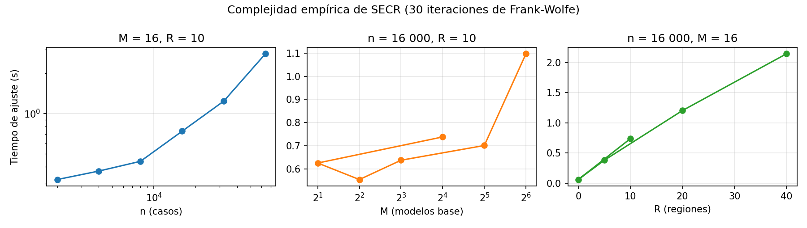

19. Modelo original: ensamble multivista con selección condicionada por región (SECR)#
Este capítulo presenta el modelo original del proyecto: su motivación, su formulación matemática, el algoritmo con pseudocódigo, sus propiedades demostradas, su complejidad, el código y las pruebas unitarias. La revisión de literatura y la declaración de novedad están en el capítulo 16. La validación estadística frente a los benchmarks está en el capítulo 20.
19.1 Motivación#
El capítulo 18 mostró que un ensamble de modelos especializados en vistas distintas del caso supera a cualquier modelo individual con las mismas variables (G supera a D, un XGBoost con todas las variables, en 5 de 5 pliegues externos). Las vistas son: el lugar de trabajo (las 9 variables del curso), la lesión (códigos OIICS), los códigos finos (NAICS-6, SOC-6 y sus cruces, con codificación por objetivo fuera de pliegue) y el empleador. G combina los 16 modelos base con la selección de ensambles de [CNMCK04], que asigna un solo vector de pesos para todo el espacio de entrada.
Ese diseño tiene dos limitaciones.
La utilidad de cada vista cambia según el tipo de caso. El código de la lesión discrimina mucho en manufactura y poco en salud. La vista del empleador solo ayuda donde hay empresas con muchos casos. Unos pesos globales promedian esas diferencias.
Los pesos de Caruana salen de una regla de paso fijo sin garantías. Cada paso añade un modelo con peso \(1/(t+1)\), aunque eso empeore la pérdida. No hay certificado de optimalidad y el resultado depende de la inicialización y del número de pasos. Además, unos pesos globales que solo dependen del error global se parecen a una de las «reglas estándar» contra las que la guía (Cuadro 1) pide contrastar la propuesta.
SECR (selección de ensambles condicionada por región con contracción) ataca las dos limitaciones:
aprende un vector de pesos convexos por región del espacio de entrada;
contrae esos pesos hacia los globales en proporción a la escasez de datos de la región;
resuelve cada problema con Frank-Wolfe con búsqueda lineal exacta, que da pérdida no creciente, convergencia \(O(1/t)\) y un certificado de optimalidad.
19.2 Postura sobre las variables de la lesión#
La tarea es clasificar el desenlace de un caso ya registrado. Los códigos OIICS (naturaleza, parte del cuerpo, evento y fuente) los asigna OSHA a partir del relato del caso, y existen cuando el caso se clasifica: no son información del futuro. Hay un riesgo indirecto en los fallecimientos, porque el relato menciona la muerte en el 54 % de ellos y algunos códigos de naturaleza pueden reflejarlo. Esta es la postura única del libro (corrige la incoherencia B7 del capítulo de trazabilidad). Como la comparación del capítulo 20 es pareada, los benchmarks tienen exactamente las mismas variables, así que ninguna ventaja del modelo original viene de tener más información.
Por qué dos conjuntos de variables.
Entregable 2 (capítulos 6 a 13): 9 variables (
data.FEATURES). Son las del lugar de trabajo, la ocupación, el tipo de incidente y el horario, con NAICS y SOC agrupados (NAICS-3 y SOC menor). Se eligieron así para que los 140 modelos con búsqueda anidada fueran computables (unas 210 columnas one-hot) y siguiendo el diseño de los entregables 1 y 2.Modelo original y comparación pareada (capítulos 18 a 20):
VPLUS(paired.VPLUS). Son las 9 anteriores más los códigos OIICS, NAICS-6, SOC-6, el EIN y la empresa. El capítulo 18 mostró que esa información es la que más mejora el problema.En el capítulo 20 los 7 benchmarks reciben
X[VPLUS], las mismas columnas crudas que el original, y cada uno aplica su propio preprocesamiento dentro del pliegue (paired.run_benchmark).
Limitación. El balanceo y el optimizador de cada benchmark (la «mejor combinación» del capítulo 13b) se eligieron
con las 9 variables, no con VPLUS. Con las variables ampliadas solo se repite la búsqueda de hiperparámetros dentro
de esa combinación; no se rehicieron las 16 combinaciones por modelo (habría multiplicado por 16 el cómputo). Con
otras variables, la mejor combinación podría ser otra. El cambio de ranking muestra que importa: KNN pasa del quinto
lugar con 9 variables (BA 0,415, dashboard_final/data/leaderboard.csv) al primero con VPLUS (BA 0,569,
results/pareado/resumen_modelos.csv).
19.3 Formulación#
Sean \(M\) modelos base con probabilidades \(P_m(x)\in\Delta_K\) (\(K=4\) clases) y \(n\) casos de entrenamiento con predicciones fuera de pliegue \(P_m(x_i)\). Sea \(T\in[\varepsilon,1]^{n\times M}\) la matriz de probabilidades de la clase verdadera:
Para pesos \(w\in\Delta_M=\{w\ge 0,\ \mathbf 1^\top w=1\}\), la mezcla \(q(x)=\sum_m w_m P_m(x)\) es una distribución sobre las \(K\) clases, y su pérdida logarítmica en el caso \(i\) es \(\ell_i(w) = -\log(T_i^\top w)\). Dada una variable de compuerta \(r(x)\in\{1,\dots,R\}\) de baja cardinalidad, el problema de la región \(g\), con \(n_g\) casos, es
Es decir, \(F_g(w) = -\sum_i a_i\log(T_i^\top w)\) con pesos por observación
El hiperparámetro \(\lambda\ge 0\) funciona como \(\lambda\) pseudo-observaciones tomadas de toda la población:
con \(\lambda=0\) los pesos son puramente locales;
con \(\lambda\to\infty\), \(F_g\) tiende a la pérdida global \(F_0(w)=-\frac1n\sum_i\log(T_i^\top w)\);
una región con \(n_g\ll\lambda\) queda cerca de los pesos globales, y una con \(n_g\gg\lambda\) usa sus propios datos.
Es la misma lógica de la contracción empírica-bayesiana, aplicada a pesos de combinación en lugar de a medias. Las regiones con menos de \(n_{\min}\) casos usan directamente los pesos globales \(w_0^\star=\arg\min F_0\).
Predicción. Para un caso nuevo, con \(\pi\) las proporciones de clase del entrenamiento,
Con \(\alpha=0\) la decisión es el \(\arg\max\). Con \(\alpha=1\) es la regla que maximiza la balanced accuracy esperada si \(q\) está calibrada [CPP18]. \(\alpha\) es un hiperparámetro.
19.4 Algoritmo#
Algoritmo SECR
Entradas : P (n × M × K) probabilidades fuera de pliegue de los modelos base; y (n); región r (n);
λ ≥ 0; T_max pasos; tolerancia τ; tamaño mínimo n_min; α ∈ [0, 1]
Salidas : w₀ ∈ Δ_M (pesos globales); {w_g ∈ Δ_M} (pesos por región); π (prior de clases)
1 T[i,m] ← max(P[i,m,y_i], ε) # ec. (eq-T)
2 w₀ ← FW(T, a = 1/n, inicio = mejor vértice) # pesos globales
3 para cada región g con n_g ≥ n_min:
4 a_i ← 1[r_i = g]/(n_g + λ) + λ/((n_g + λ)·n) # ec. (eq-a)
5 w_g ← FW(T, a, inicio = w₀)
6 π_k ← proporción de la clase k en y
7 devolver w₀, {w_g}, π
Función FW(T, a, w): # Frank-Wolfe con búsqueda lineal exacta
8 para t = 0, 1, …, T_max:
9 q ← T w # O(nM)
10 ∇ ← −Tᵀ (a ⊘ q) # gradiente, O(nM)
11 s ← argmin_m ∇_m # oráculo lineal: un vértice del símplex
12 G ← ∇ᵀ w − ∇_s # brecha de Frank-Wolfe (≥ 0)
13 si G ≤ τ o t = T_max: devolver w # criterios de parada
14 δ ← T[:, s] − q ; φ'(γ) = −Σ_i a_i δ_i / (q_i + γ δ_i)
15 γ ← 1 si φ'(1) ≤ 0; si no, la raíz de φ' en (0, 1) por bisección (25 pasos)
16 w ← (1 − γ) w + γ e_s
Hiperparámetros y su optimización. El algoritmo tiene cinco hiperparámetros: la variable de compuerta (ninguna,
tipo de incidente, tipo de establecimiento, sector NAICS-2, SOC mayor, o la primera cifra de los códigos de naturaleza,
evento o parte), \(\lambda\in[1,10^4]\), \(T_{\max}\in[5,100]\), \(n_{\min}\in[50,3000]\) y \(\alpha\in[0,1]\). Se optimizan con
búsqueda bayesiana TPE (Optuna; [ASY+19]). La búsqueda tiene 16 configuraciones, igual que los
benchmarks del capítulo 7, y evalúa la balanced accuracy en 3 pliegues internos por establecimiento, formados solo con
las predicciones fuera de pliegue del entrenamiento externo. El pliegue externo nunca participa
(src/osha_e3/original_eval.py, función tune).
19.5 Propiedades demostradas#
En toda esta sección, \(F(w)=-\sum_i a_i\log(T_i^\top w)\) con \(a\in\Delta_n\) y \(T\in[\varepsilon,1]^{n\times M}\); esto cubre \(F_0\) y todas las \(F_g\).
Proposición 1 (convexidad). \(F\) es convexa en \(\Delta_M\).
Demostración. \(w\mapsto T_i^\top w\) es lineal y \(\log\) es cóncava, así que \(\log(T_i^\top w)\) es cóncava y \(-a_i\log(T_i^\top w)\) es convexa porque \(a_i\ge0\). Una suma de convexas es convexa. Equivalentemente, \(\nabla^2F(w)=\sum_i a_i\,T_iT_i^\top/(T_i^\top w)^2\succeq0\). \(\square\)
Proposición 2 (factibilidad y pérdida no creciente). Si \(w^0\in\Delta_M\), todos los iterados cumplen \(w^t\in\Delta_M\) y \(F(w^{t+1})\le F(w^t)\).
Demostración. \(w^{t+1}=(1-\gamma)w^t+\gamma e_s\) con \(\gamma\in[0,1]\) es una combinación convexa de dos puntos del símplex. La búsqueda lineal minimiza \(\varphi(\gamma)=F(w^t+\gamma(e_s-w^t))\) sobre \([0,1]\), que contiene \(\gamma=0\), así que \(F(w^{t+1})=\min_\gamma\varphi(\gamma)\le\varphi(0)=F(w^t)\). La búsqueda es exacta porque \(\varphi\) es convexa (restricción de una convexa a un segmento) con \(\varphi'(0)=-G_t\le0\). Si \(\varphi'(1)\le0\) el mínimo está en \(\gamma=1\). Si no, \(\varphi'\) es continua y creciente, tiene una única raíz en \((0,1)\), y la bisección la encuentra con error \(2^{-25}\). \(\square\)
Proposición 3 (certificado de optimalidad). Para todo \(w\in\Delta_M\), \(F(w)-F^\star\le G(w)\), con \(G(w)=\nabla F(w)^\top w-\min_m\nabla F(w)_m\).
Demostración. Por convexidad, \(F^\star=F(w^\star)\ge F(w)+\nabla F(w)^\top(w^\star-w)\ge F(w)+\min_{v\in\Delta_M}\nabla F(w)^\top(v-w)=F(w)-G(w)\), porque una función lineal alcanza su mínimo sobre el símplex en un vértice. \(\square\)
En consecuencia, el criterio de parada \(G_t\le\tau\) garantiza una solución \(\tau\)-óptima. La prueba unitaria
test_perdida_no_creciente_y_brecha_certifica lo verifica numéricamente.
Proposición 4 (convergencia \(O(1/t)\)). \(F(w^t)-F^\star\le\dfrac{2C_F}{t+2}\), con constante de curvatura \(C_F\le 4/\varepsilon^2\).
Demostración. Para \(w\in\Delta_M\), \(T_i^\top w\in[\varepsilon,1]\), porque es un promedio ponderado de valores en \([\varepsilon,1]\). Para \(d=v-w\) con \(v,w\in\Delta_M\) se tiene \(\|d\|_1\le2\) y \(|T_i^\top d|\le\|d\|_1\max_m T_{im}\le2\), así que \(d^\top\nabla^2F(w)d=\sum_ia_i(T_i^\top d)^2/(T_i^\top w)^2\le4/\varepsilon^2\). Esto acota la constante de curvatura de [Jag13]. Su teorema 1 da la tasa \(2C_F/(t+2)\) para el paso \(2/(t+2)\). Con búsqueda lineal exacta, cada paso reduce \(F\) al menos tanto como ese paso, porque el paso \(2/(t+2)\) es uno de los candidatos de la búsqueda, y la misma inducción vale. \(\square\)
La cota es conservadora (\(\varepsilon\) es pequeño). En la práctica la brecha cae varios órdenes de magnitud en pocas decenas de iteraciones (figura de convergencia, sección 20.5).
Proposición 5 (terminación y límites de la contracción). (a) FW termina en a lo sumo \(T_{\max}+1\) iteraciones. (b) Con \(\lambda\to\infty\), \(F_g\to F_0\) uniformemente en \(\Delta_M\), y todo punto límite de minimizadores de \(F_g\) minimiza \(F_0\). (c) Con \(\lambda=0\), \(F_g\) solo depende de los casos de la región.
Demostración. (a) es inmediata por el criterio de parada. (b) \(F_g-F_0=\frac{n_g}{n_g+\lambda}\big(\bar F_g-F_0\big)\), con \(\bar F_g\) la pérdida media de la región. Ambas están acotadas en \([0,-\log\varepsilon]\), así que \(\sup_{\Delta_M}|F_g-F_0|\le\frac{n_g}{n_g+\lambda}(-\log\varepsilon)\to0\). Como \(\Delta_M\) es compacto y las funciones son continuas, la convergencia uniforme preserva los puntos límite de los minimizadores. (c) es inmediata de (7). \(\square\)
Proposición 6 (Caruana como caso particular). La selección de Caruana con reemplazo, después de \(k_0\) modelos iniciales, actualiza \(w^{t+1}=(1-\gamma_t)w^t+\gamma_te_s\) con \(\gamma_t=1/(k_0+t+1)\) y \(s=\arg\min_mF((1-\gamma_t)w^t+\gamma_te_m)\). Es un esquema de tipo Frank-Wolfe sin regiones (\(R=1\)), con un paso fijo predeterminado y un oráculo que evalúa la pérdida verdadera en lugar de su linealización.
Demostración. Si \(c^t\) son los conteos de selección y \(k=k_0+t\) su total, \(w^t=c^t/k\). Añadir el modelo \(s\) da \(w^{t+1}=(c^t+e_s)/(k+1)=\frac{k}{k+1}w^t+\frac1{k+1}e_s\). \(\square\)
Como el paso es fijo, Caruana puede aumentar la pérdida: se ve cuando el mejor movimiento sería \(\gamma=0\). Tampoco tiene un certificado como el de la proposición 3. SECR conserva el espíritu de Caruana (pesos convexos sobre una biblioteca de modelos, ajustados con la pérdida fuera de pliegue) y le añade regiones, contracción y garantías.
19.6 Complejidad#
Etapa |
Tiempo |
Memoria |
|---|---|---|
Matriz \(T\) (ec. (5)) |
\(O(nM)\) |
\(O(nM)\) |
Una iteración de FW |
\(O(nM + Bn)\), con \(B=25\) bisecciones |
\(O(n)\) |
Ajuste de SECR |
\(O\big((R+1)\,T_{\max}\,n\,(M+B)\big)\) |
\(O(nM+RM)\) |
Búsqueda TPE del combinador |
\(16\times3\) ajustes de SECR |
— |
Nivel 0 (16 modelos base, 5 pliegues + reajuste) |
domina el costo: \(6\times\sum_m \text{costo}_m(n)\) |
— |
Predicción de un caso |
\(O(MK)\) más la de los 16 modelos base |
\(O(RM)\) |


Figura 9 Tiempo de ajuste de SECR (30 iteraciones) en datos sintéticos al variar el número de casos \(n\), de modelos base \(M\) y
de regiones \(R\) (scripts/complejidad_secr.py).#
La Figura 9 contrasta el análisis con tiempos medidos. El tiempo crece de forma aproximadamente
lineal con \(n\) y con \(R\), como predice la tabla. Con \(M\le32\) el término \(Bn\) de la bisección y el costo fijo de
Python por iteración pesan más que \(nM\), así que la dependencia en \(M\) solo se nota con \(M=64\). Con los tamaños del
proyecto (\(n\approx24\,000\), \(M=16\), \(R\le25\)), SECR se ajusta en segundos. El costo del modelo original lo domina el
nivel 0. Tiempo de entrenamiento del original por pliegue externo (nivel 0 + búsqueda TPE + SECR, con 2 hilos y en
paralelo con otras celdas; columna train_s de results/pareado/pliegues.csv): media 51 min, mediana 40 min, rango
30–91 min. Es la única cifra de tiempo del original que se usa en el libro; los 22–24 min del capítulo 18 son de otra
corrida (sin TPE y con menos procesos en paralelo).
19.7 Implementación y pruebas#
La clase ConditionalEnsembleSelection hereda de BaseEstimator y ClassifierMixin, implementa fit,
predict_proba y predict, y valida sus entradas con check_X_y y check_array. Su entrada es la matriz de
meta-variables \([P_1|\dots|P_M|r]\). OriginalModel (src/osha_e3/original_final.py) encadena el nivel 0, la
búsqueda TPE y SECR, y es el artefacto que usa el dashboard. Solo usa numpy para la parte numérica propia.
def frank_wolfe(T, a, n_steps=50, tol=1e-6, w0=None):
"""Minimiza ``F(w) = −Σ_i a_i log(T_i · w)`` sobre el símplex con Frank-Wolfe y búsqueda lineal exacta.
Parameters
----------
T : ndarray (n, M)
Probabilidad de la clase verdadera según cada modelo (``≥ EPS``).
a : ndarray (n,)
Pesos no negativos de las observaciones (suman 1).
n_steps : int
Máximo de iteraciones (criterio de parada 1).
tol : float
Tolerancia de la brecha de Frank-Wolfe (criterio de parada 2).
w0 : ndarray (M,) or None
Punto inicial en el símplex; por defecto, el mejor vértice.
Returns
-------
w : ndarray (M,)
history : dict
``loss`` y ``gap`` por iteración (curva de convergencia).
"""
n, M = T.shape
if w0 is None:
w = np.zeros(M)
w[np.argmin(-(a @ np.log(T)))] = 1.0
else:
w = np.asarray(w0, dtype=float).copy()
loss, gaps = [], []
for _ in range(int(n_steps) + 1):
q = T @ w
f = -float(a @ np.log(q))
grad = -(T.T @ (a / q))
s = int(np.argmin(grad))
gap = float(grad @ w - grad[s])
loss.append(f)
gaps.append(gap)
if gap <= tol or len(loss) > n_steps:
break
delta = T[:, s] - q # dirección en el espacio de q: q(γ) = q + γ δ
def dphi(g):
return -float(a @ (delta / (q + g * delta)))
if dphi(1.0) <= 0: # la pérdida sigue bajando hasta el vértice
gamma = 1.0
else: # φ'(0) = −gap < 0 < φ'(1): raíz única por convexidad
lo, hi = 0.0, 1.0
for _ in range(25): # |γ − γ*| ≤ 2^-25
mid = 0.5 * (lo + hi)
lo, hi = (mid, hi) if dphi(mid) < 0 else (lo, mid)
gamma = 0.5 * (lo + hi)
w = (1 - gamma) * w
w[s] += gamma
return w, {'loss': np.array(loss), 'gap': np.array(gaps)}
def true_class_matrix(P, y):
"""``T[i, m] = P[i, m, y_i]`` recortada a ``EPS``. ``P`` tiene forma (n, M, K)."""
return np.clip(P[np.arange(len(y)), :, y], EPS, 1.0)
class ConditionalEnsembleSelection(BaseEstimator, ClassifierMixin):
"""Selección de ensambles condicionada por región con contracción (SECR).
La entrada ``X`` es la matriz de meta-variables ``[P_1 | P_2 | … | P_M | región]``: las probabilidades de
los ``M`` modelos base (``M·K`` columnas, en bloques de ``K``) y, al final, el código entero de la región
(0, 1, …). Con ``gate=False`` la última columna se ignora y el modelo aprende pesos globales.
Parameters
----------
n_classes : int
Número de clases ``K``.
lam : float
Fuerza de la contracción hacia los pesos globales (pseudo-observaciones, ec. 1).
n_steps : int
Máximo de iteraciones de Frank-Wolfe por región.
min_region : int
Regiones con menos casos de entrenamiento usan los pesos globales.
alpha : float in [0, 1]
Exponente de la corrección por prior en la decisión.
gate : bool
Si se usan regiones (``True``) o solo pesos globales (``False``).
tol : float
Tolerancia de la brecha de Frank-Wolfe.
"""
def __init__(self, n_classes=4, lam=100.0, n_steps=50, min_region=200, alpha=1.0, gate=True, tol=1e-7):
self.n_classes, self.lam, self.n_steps, self.min_region = n_classes, lam, n_steps, min_region
self.alpha, self.gate, self.tol = alpha, gate, tol
def _split(self, X):
K = self.n_classes
if (X.shape[1] - 1) % K or X.shape[1] < K + 1:
raise ValueError(f'X debe tener M·{K} columnas de probabilidades más una de región; tiene {X.shape[1]}.')
P = X[:, :-1].reshape(len(X), -1, K)
if np.any(P < 0) or np.any(P > 1 + 1e-6):
raise ValueError('Las probabilidades de los modelos base deben estar en [0, 1].')
r = X[:, -1]
if np.any(r < 0) or np.any(r != np.round(r)):
raise ValueError('La región debe ser un entero no negativo.')
return P, r.astype(int)
def fit(self, X, y):
X, y = check_X_y(X, y, dtype=float)
if self.lam < 0 or self.n_steps < 0 or not 0 <= self.alpha <= 1:
raise ValueError('Se requiere lam >= 0, n_steps >= 0 y 0 <= alpha <= 1.')
self.classes_ = np.arange(self.n_classes)
y = y.astype(int)
if y.min() < 0 or y.max() >= self.n_classes:
raise ValueError(f'y debe estar codificada 0..{self.n_classes - 1}.')
P, r = self._split(X)
self.n_models_ = P.shape[1]
T = true_class_matrix(P, y)
n = len(y)
self.weights_global_, self.history_ = frank_wolfe(T, np.full(n, 1.0 / n), self.n_steps, self.tol)
self.weights_region_ = {}
if self.gate:
for g in np.unique(r):
m = r == g
ng = int(m.sum())
if ng < self.min_region:
continue
a = np.full(n, self.lam / ((ng + self.lam) * n))
a[m] += 1.0 / (ng + self.lam)
self.weights_region_[int(g)], _ = frank_wolfe(T, a, self.n_steps, self.tol, self.weights_global_)
self.prior_ = np.maximum(np.bincount(y, minlength=self.n_classes) / n, 1e-12)
return self
def region_weights(self, r):
"""Matriz (n, M) de pesos que corresponde a cada código de región."""
W = np.tile(self.weights_global_, (len(r), 1))
for g, w in self.weights_region_.items():
W[r == g] = w
return W
def predict_proba(self, X):
check_is_fitted(self, 'weights_global_')
X = check_array(X, dtype=float)
P, r = self._split(X)
if P.shape[1] != self.n_models_:
raise ValueError(f'Se esperaban {self.n_models_} modelos base; llegaron {P.shape[1]}.')
q = np.einsum('nm,nmk->nk', self.region_weights(r), P)
return q / q.sum(axis=1, keepdims=True)
def decide(self, q):
return (q / self.prior_ ** self.alpha).argmax(axis=1)
def predict(self, X):
return self.classes_[self.decide(self.predict_proba(X))]
def score(self, X, y, sample_weight=None):
"""Balanced accuracy (la métrica principal del proyecto)."""
return balanced_accuracy_score(y, self.predict(X), sample_weight=sample_weight)
Pruebas unitarias (pytest tests/test_combinador.py; las 8 pasan):
Prueba |
Qué verifica |
Exigencia de la guía §5.4 |
|---|---|---|
|
Dos regiones donde un modelo distinto es casi perfecto en cada una: SECR recupera \(w_1\approx e_0\), \(w_2\approx e_1\) (pesos > 0,9) y baja la log-loss frente a los pesos globales |
(i) aprende con solución conocida |
|
Mismos datos, mismas probabilidades (algoritmo determinista) |
(ii) reproducibilidad |
|
Columnas que no forman bloques de \(K\), probabilidades fuera de \([0,1]\), \(\alpha>1\), etiquetas fuera de rango, predecir sin ajustar, otro número de modelos base |
(iii) entradas inválidas |
|
|
(iv) |
|
Pesos \(\ge0\) que suman 1 y probabilidades válidas |
Proposición 2 |
|
\(F(w^{t+1})\le F(w^t)\) y \(F(w^t)-F^\star\le G_t\) en 300 iteraciones |
Proposiciones 2 y 3 |
|
Con \(\lambda=10^9\) los pesos regionales coinciden con los globales |
Proposición 5(b) |
|
Una región no vista usa \(w_0\) |
Robustez |
Además, tests/test_ensemble.py (5 pruebas) verifica la codificación por objetivo fuera de pliegue del nivel 0, y
tests/test_candado_prueba.py (2 pruebas) verifica que la prueba de octubre a diciembre esté bloqueada. Cuatro de las
pruebas del ensamble necesitan results/cache/osha_2023_fullcodes.parquet, que no se versiona porque contiene el EIN y
el nombre de la empresa. Se genera con python scripts/build_fullcodes.py desde el CSV de OSHA y queda idéntico al
usado en las corridas (--check: 890 372 filas y 0 diferencias). Con ese archivo, pytest tests/ da 44 de 44
pruebas aprobadas (ensamble, SECR, candado y PT-bagging) con scikit-learn 1.3.0, imbalanced-learn 0.12.4 y XGBoost
2.1.3.
19.8 Ablación e interpretabilidad#
El estudio de ablación (sección 20.4) retira cada componente por separado:
las regiones (pesos solo globales);
la corrección por prior (\(\alpha=0\));
la regla de combinación completa, reemplazada por cada regla estándar: promedio simple, pesos por error global, stacking lineal y Caruana (G).
Todas las variantes usan los mismos modelos base, las mismas predicciones y los mismos pliegues. La interpretabilidad del modelo original (SHAP exacto por grupos de variables, comparado con el mejor benchmark) está en la sección 20.6 y en el dashboard.
19.9 Candidatos probados (guía §13)#
Antes del modelo final se probaron 13 diseños. La guía (§13) pide declarar qué se miró para elegir, porque elegir entre varios candidatos introduce un sesgo optimista en el que gana. La tabla resume cada diseño con sus cifras guardadas.
Diseño |
Capítulo |
Datos usados para elegir |
Resultado |
|---|---|---|---|
PT-bagging (bagging + umbral = prior) |
17 |
Pliegues temporales del diseño de Iván (3 pliegues) |
BA 0,386 frente a 0,516 de la referencia (XGBoost + |
MultiRandBal (Random Balance) |
17 |
Pliegues temporales |
BA 0,361; 0 de 12 fallecimientos |
Metaclasificación jerárquica |
17 |
Pliegues temporales |
BA 0,371; 0 fallecimientos marcados |
HAFL-XGBoost (pérdida focal propia) |
17 |
Pliegues temporales |
BA 0,522 frente a 0,516 de la referencia, igual que su ablación sin pérdida focal (0,523): no mejora por el mecanismo ( |
Frank–Hall ordinal (clases 2 a 4) |
17 |
Pliegues temporales |
BA de 3 clases 0,525 frente a 0,527 del mejor base: no mejora ( |
A. Stacking con los 5 modelos del curso |
18 |
Pliegues externos (rep. 0) y prueba |
BA externa 0,397, accuracy 0,501 |
B. Stacking multivista sin empleador |
18 |
Pliegues externos (rep. 0) y prueba |
BA 0,457, accuracy 0,578 |
C. Stacking multivista (4 vistas) |
18 |
Pliegues externos (rep. 0) y prueba |
BA 0,466, accuracy 0,586 |
D. Un XGBoost con todas las variables |
18 |
Pliegues externos (rep. 0) y prueba |
BA 0,469, accuracy 0,590 |
E. C + 3 modelos con toda la información |
18 |
Pliegues externos (rep. 0) y prueba |
BA 0,468, accuracy 0,590 |
F. 16 modelos base + meta-modelo logístico |
18 |
Pliegues externos (rep. 0) y prueba |
BA 0,471, accuracy 0,591 |
G. 16 modelos base + selección de Caruana |
18 |
Pliegues externos (rep. 0) y prueba |
BA 0,477, accuracy 0,599: elegido como nivel 0 del original |
SECR sobre los 16 modelos de G (final) |
19–20 |
Pliegues internos (TPE dentro de cada pliegue externo) |
BA 0,591 ± 0,087 en 15 pliegues pareados; no superior a KNN (capítulo 20) |
Las cifras de A a G son BA y accuracy con argmax, media de los 5 pliegues externos de la repetición 0
(results/ensemble/*/fold*.npz).
Cómo se eligió SECR y qué se miró.
El diseño de SECR se fijó antes de ver cualquier resultado del experimento pareado. El 22 de octubre a las 23:30 el equipo eligió «G + combinador condicional por región». La regla, sus hiperparámetros y sus rangos de búsqueda se programaron antes de correr la primera celda y no se cambiaron después.
Sus hiperparámetros los eligió la búsqueda TPE con las predicciones internas de cada pliegue externo. El pliegue externo no participa (
original_eval.tune).Los 15 pliegues del veredicto sí se miraron, después de fijar el modelo: para el análisis de R3, la ablación (20.4) y la sensibilidad (20.7). Ninguna de esas miradas cambió el modelo. La sensibilidad mostró que una versión con pesos globales habría dado más BA (≈ 0,62 frente a 0,591), y no se adoptó, porque sería elegir con los pliegues del veredicto.
Decisiones tomadas durante la corrida, y por qué no favorecen al original.
El recorte de 5×5 a 3×5 se decidió por tiempo de cómputo, antes de tener métricas.
Al ver en la repetición 0 que KNN era el benchmark más fuerte, se completaron sus repeticiones 1 y 2. Eso endurece la comparación contra el original.
Random Forest y Naive Bayes se completaron al final, con tiempo sobrante; no cambian la comparación con KNN.
Fuente de sesgo que se declara: el nivel 0 (G) se eligió entre A–G mirando los 5 pliegues de los capítulos 6 a 13, que son la repetición 0 del capítulo 20 (
paired.outer_folds(0)), y la prueba. En la repetición 0 el original supera a KNN por +0,035 de BA; en las repeticiones 1 y 2, que no se habían visto, por +0,006 y +0,027 (sección 20.6).